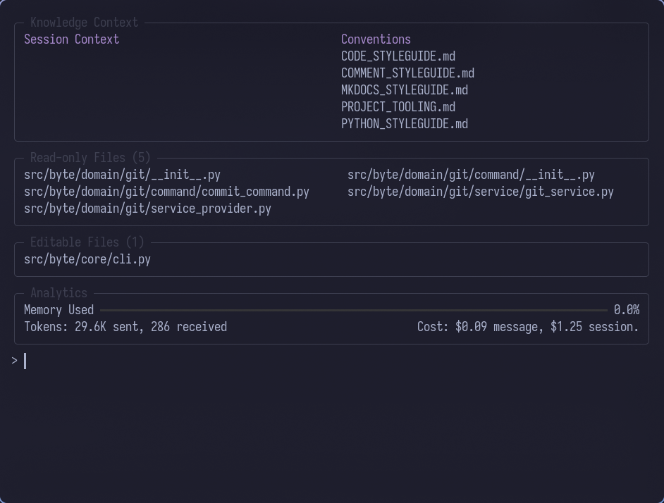

Memory & Context Management
Byte's approach to memory and context is designed to keep conversations focused, reduce token usage, and encourage best practices through deliberate constraints. Understanding how Byte manages context helps you work more effectively with the AI.

Analytics & Context Tracking
Byte displays an analytics bar after each AI interaction, providing real-time feedback about token usage and context consumption. The bar features statistics about the current session but also includes a progress bar showing you how much of the agent's input context has been used.
This visual indicator helps you manage input context effectively - you can see at a glance when you're approaching context limits and should consider removing files that are no longer being used.
The analytics panel shows:
- Memory usage progress bar - Visual representation of context consumption
- Token statistics - Sent and received tokens for the last message
- Cost tracking - Per-message and session-total costs
No Persistent Memory
Byte does not persist conversation history between sessions. When you exit and restart Byte, the AI starts fresh with no memory of previous conversations.
Why No Persistence?
This design choice serves several purposes:
Keeps You Honest
- Forces clear, explicit communication in each session
- Prevents relying on unstated context from previous conversations
- Encourages complete problem descriptions
Reduces Context Size
- No accumulation of stale conversation history
- Lower token costs per interaction
- Faster response times
Encourages Documentation
- Important patterns belong in Conventions, not chat history
- Knowledge becomes project documentation, not hidden in logs
- Team members benefit from documented standards
When to Create Conventions
If the AI consistently follows a pattern or standard you've explained:
> The AI keeps suggesting async/await patterns for our services
✓ Create a convention file documenting your async patterns
✗ Don't rely on explaining it in every session
Add it to .byte/conventions/:
# Async Patterns
All service methods must be async:
\`\`\`python
class MyService(Service):
async def process(self) -> bool:
result = await self.operation()
return result
\`\`\`
Now the AI knows this rule in every session without you repeating it.
Smart Block Removal
To keep the AI focused on current code state and reduce input context, Byte removes SEARCH/REPLACE blocks from historic messages after they're processed.
How It Works
After the AI generates SEARCH/REPLACE blocks:
- Blocks are applied to your files (with your approval)
- Historic messages are masked - blocks are replaced with summaries
- Fresh file content is provided from the file context
- AI sees current state - not outdated proposed changes
Example Transformation
Original AI Message:
Here's how to fix that:
'''python
+++++++ src/main.py
<<<<<<< SEARCH
def old_function():
pass
=======
def new_function():
return True
> > > > > > > REPLACE
> > > > > > > '''
This change updates the function to return a boolean.
After Processing (in chat history):
Here's how to fix that:
'''python
_[Changes applied to `src/main.py` - search/replace block removed]_
'''
This change updates the function to return a boolean.
Why Remove Blocks?
Prevents Confusion
- If you corrected the AI's code after applying blocks, the old suggestions disappear
- The AI only sees what's actually in the files now
- No conflicting versions of code in context
Saves Tokens
- SEARCH/REPLACE blocks are verbose
- Historic blocks consume input context without adding value
- More tokens available for relevant information
Keeps AI On Task
- Focus on current problem, not past solutions
- Fresh perspective on each turn
- Reduces tendency to repeat previous patterns